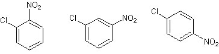
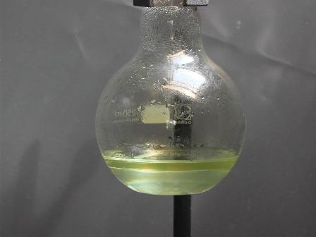
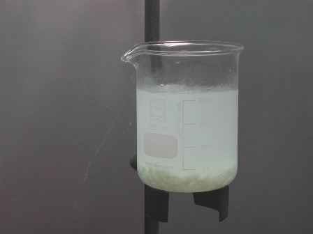
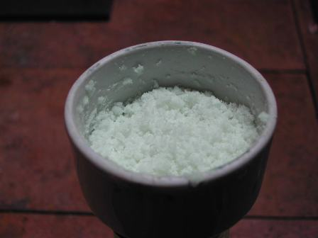
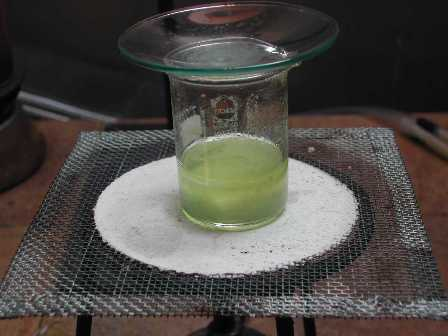
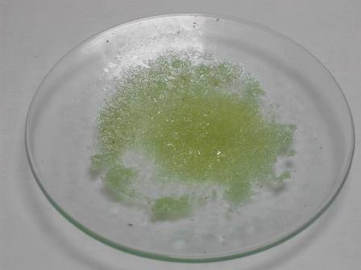
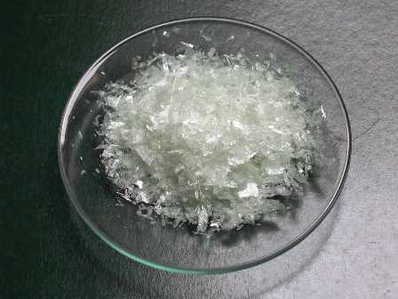

La mononitrazione del benzene e dei suoi alogenoderivati è facile, tuttavia nel caso dei derivati monosostituiti si pone poi la necessità di separare gli isomeri prodotti.
Nel caso del clorobenzene (nel quale l'atomo di alogeno è o-p- orientante) si otterrà dopo la nitrazione una miscela di o- e p- nitroclorobenzene, che vanno separati.
(Si forma anche un pochino di m-derivato, ma è in subordine e per i nostri scopi possiamo trascurarlo).
Ho provato questa sintesi per vederne la resa e le possibiità di separazione, sfruttando il fatto che il p-derivato è pochissimo solubile in etanolo freddo, a differenza degli altri isomeri, che rimangono in soluzione.

I tre nitroderivati
Materiale occorrente:
-clorobenzene C6H5Cl
-acido nitrico
-acido solforico
-etanolo
-vetreria opportuna

In un pallone da 250 ml mescolare cautamente 20 ml di acido nitrico al 65% e 20 ml di acido solforico concentrato. Raffreddando con acqua per evitare che la temperatura salga oltre i 20-30°, aggiungere goccia a goccia 10 ml di clorobenzene mettendo il pallone su agitatore magnetico ed alla fine dell'aggiunta lasciar mescolare per un'ora a temperatura ambiente. Riscaldare poi dolcemente e tenere per un'altra ora sull'agitatore.

Alla fine si otterrà una miscela in due fasi, che verrà versata, sempre agitando, in 200 ml di acqua molto fredda.

Si separa un solido bianco, che verrà filtrato su buchner eliminando il più possibile il liquido acido. Rompere bene i grumi con una bacchetta di vetro e lavare prima con una soluzione fredda al 5% di NaHCO3 e poi ancora con acqua ghiacciata fino a eliminazione completa dell'acidità.
Si ottiene una miscela di o- e p-cloronitrobenzene, in percentuale relativa di circa 70-30 in favore del primo. Sciogliere il prodotto ancora umido (ma ben pressato) nella minima quantità di etanolo bollente fino a soluzione limpida; coprire il becher con un vetrino per evitare l'evaorazione del solvente e lasciar raffreddare lentamente.
L'isomero para precipita in cristalli quasi incolori mentre l'o- rimane in soluzione che viene separata con una cauta decantazione.
Lavare il solido con tre porzioni da 1,5 ml di etanolo freddo e unire il lavaggio all'altra soluzione.

Il sottoprodotto (o-cloronitrobenzene)
Asciugare il p-derivato e raccogliere su carta da filtro i bei cristalli, che asciugano molto facilmente (p.f. 80-83°); per l'altro isomero lasciar evaporare il solvente fino a cristallizzazione, che è però più difficile, anche per il bassissimo punto di fusione (teorico 31-33°, in pratica più basso).
Per questo si ottengono cristallini untuosi, di colore giallo verde chiaro.
Entrambi questi nitroderivati hanno il caratteristico, penetrante e molto persistente odore di mandorle amare come il nitrobenzene, sono irritanti e tossici e vanno quindi trattati con la cautela dovuta a tutte queste sostanze benzene-derivate.
La resa è stata di 7 g di p-cloronitrobenzene e di 1,7 g di o-cloronitrobenzene, circa il 54% sul totale.

Il prodotto (p-cloronitrobenzene) cristallizzato
Ho di gran lunga privilegiato la resa nell'isomero para, lavando bene e lasciando che le impurezze si concentrassero nel liquido madre, che alla fine ha fornito una esigua resa nell'isomero o-; essendo alquanto dubbioso sulla purezza di quest'ultimo (p.f. troppo basso) ed in piccola quantità, alla fine ho preferito non conservarlo.
Il p-cloronitrobenzene ha avuto invece il solito onore di una bottiglietta tutta sua.
2 commenti